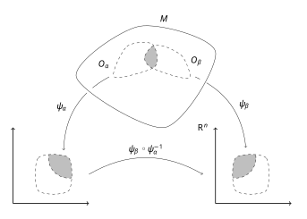

2.1 Manifolds
1. Why Manifolds?
Our experience tells us that spacetime is a four-dimensional continuum in the sense that it requires four numbers to characterize an event. Historically, it is assumed that all events in spacetime can be put into a one-to-one continuous correspondence with the points of \(\mathbb{R}^4\) .
However, in General Relativity, spacetime geometry is not a fixed background; we will be actively solving for the spacetime geometry dynamically. Therefore, we do not wish to prejudice in advance any aspects of the global topological nature of spacetime structure by restricting it to \(\mathbb{R}^4\) .
Before defining the rigorous notion of a manifold, we must recall the foundational definition of an open ball in standard topology.
Definition 2.1.1 (Open Ball & Open Set). An open ball in \(\mathbb{R}^n\) of radius \(r\) centered around point \(y = (y^1, \dots, y^n)\) consists of the points \(x\) such that the Euclidean distance is strictly less than \(r\) , where:
\[ |x-y| = \left[ \sum_{\mu=1}^n (x^\mu - y^\mu )^2 \right]^{1/2} \]An open set in \(\mathbb{R}^n\) is defined as any set which can be expressed as a union of open balls.
2. Smooth Manifolds
A manifold is conceptually a set made up of pieces that look locally like open subsets of \(\mathbb{R}^n\) , such that these pieces can be sewn together smoothly to form a complex global geometry.
Definition 2.1.2 (Smooth Manifold). More precisely, an \(n\) -dimensional, \(\mathcal{C}^\infty\) real manifold \(\mathcal{M}\) is a set together with a collection of subsets \(\{O_\alpha\}\) satisfying the following three properties:
- Each point \(p \in \mathcal{M}\) lies in at least one \(O_\alpha\) ; i.e., the collection \(\{O_\alpha\}\) covers \(\mathcal{M}\) .
- For each \(\alpha\) , there is a one-to-one, onto map \(\psi_\alpha : O_\alpha \to U_\alpha\) , where \(U_\alpha\) is an open subset of \(\mathbb{R}^n\) .
- If any two sets \(O_\alpha\) and \(O_\beta\) overlap ( \(O_\alpha \cap O_\beta \ne \emptyset\) ), we can consider the transition map \(\psi_\beta \circ \psi_\alpha^{-1}\) which takes points in \(\psi_\alpha(O_\alpha \cap O_\beta)\) to points in \(\psi_\beta(O_\alpha \cap O_\beta)\) . We require these subsets of \(\mathbb{R}^n\) to be open and this transition map to be smooth ( \(\mathcal{C}^\infty\) ).

Each map \(\psi_\alpha\) is called a chart by mathematicians or a coordinate system by physicists. For mathematical convenience, we require that the cover \(\{O_\alpha \}\) and chart family \(\{\psi_\alpha\}\) be maximal (containing all possible compatible charts).
Remark (Physical Topological Requirements). In physically realistic models of relativity, we consider manifolds which are additionally Hausdorff and paracompact .
- Hausdorff prevents pathological "branching" spacetimes where a single particle trajectory bifurcates uncontrollably.
- Paracompactness guarantees the existence of a partition of unity, which is strictly necessary to define integration over the curved manifold.
3. Product Manifolds
We can construct higher-dimensional spaces by combining two manifolds.
Definition 2.1.3 (Product Manifold). Given two manifolds \(\mathcal{M}\) and \(\mathcal{M}'\) of dimension \(n\) and \(n'\) respectively, we can make the product space \(\mathcal{M} \times \mathcal{M}'\) into an \((n+n')\) -dimensional manifold.
If \(\psi_\alpha : O_\alpha \to U_\alpha\) and \(\psi_\beta' : O_\beta' \to U_\beta'\) are charts, we define a new chart \(U_{\alpha \beta} : O_{\alpha \beta} \to U_{\alpha \beta} \subset \mathbb{R}^{n+n'}\) on \(\mathcal{M} \times \mathcal{M}'\) by taking \(O_{\alpha \beta} = O_\alpha \times O_\beta'\) and \(U_{\alpha \beta} = U_\alpha \times U_\beta'\) . Also we can set
\[ \psi_{\alpha \beta} (p,p') = \left( \psi_\alpha(p) , \psi_\beta'(p') \right) \]for the new product manifold \(\mathcal{M} \times \mathcal{M}'\) .
4. Diffeomorphisms
We may now formally define the notion of differentiability and smoothness of maps between arbitrary manifolds, bypassing the need for any embedding space.
Definition 2.1.4 (Smooth Map & Diffeomorphism). Let \(\mathcal{M}\) and \(\mathcal{M}'\) be manifolds and let \(\{\psi_\alpha\}\) and \(\{\psi_\beta'\}\) denote their respective chart maps. A map \(f:\mathcal{M} \to \mathcal{M}'\) is said to be \(\mathcal{C}^\infty\) if for each \(\alpha\) and \(\beta\) , the composed map \(\psi_\beta' \circ f \circ \psi_\alpha^{-1}\) taking \(U_\alpha \subset \mathbb{R}^n\) into \(U_\beta' \subset \mathbb{R}^{n'}\) is \(\mathcal{C}^\infty\) in the standard sense used in advanced calculus.
If \(f:\mathcal{M} \to \mathcal{M}'\) is \(\mathcal{C}^\infty\) , one-to-one, onto (bijective), and has a \(\mathcal{C}^\infty\) inverse, \(f\) is called a diffeomorphism and \(\mathcal{M}\) and \(\mathcal{M}'\) are said to be diffeomorphic .
Diffeomorphic manifolds have mathematically identical manifold structures; in the context of relativity, they represent the exact same physical spacetime.